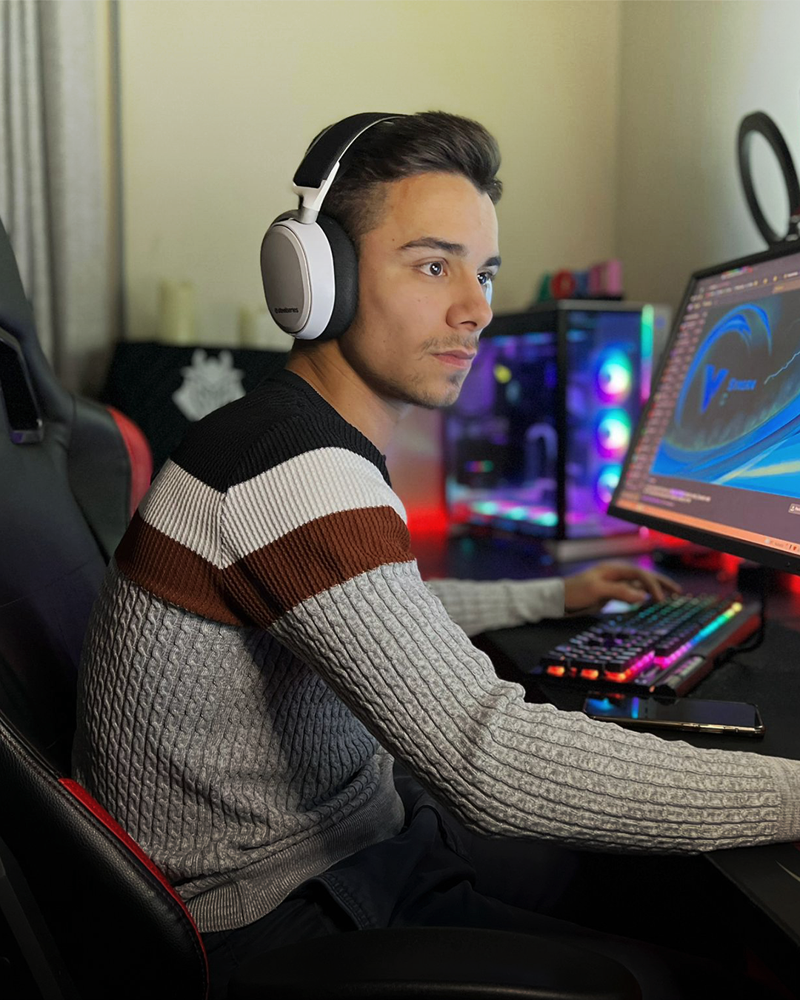
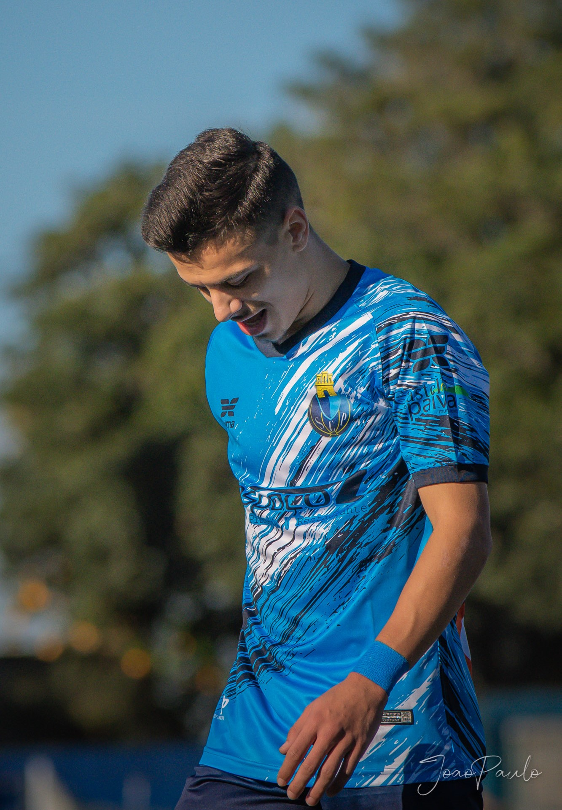

Let me tell you a little bit of my story so you can know me better and
be a part of this journey that I am building. I always liked to play
Counter Strike and it was in the Cyber Cafes in 2008 that I tried the
game when version 1.6 came out and that gave me that taste to start
playing at home in my computer. As the years went by and Counter Strike
evolved, I installed Counter Strike Global Offensive on January 2nd,
2016 and have been having fun and evolving with friends. It should be
noted and to kill your curiosity that my first rank was silver 4 :)
Then on February 15th, 2019, at the insistence of my friends I did my
first livestream, but it was just for fun, and I never assumed that I
would reach the stage I am today. What is certain is that I have been a
streamer for 3 years now on Twitch and I already have my channel
verified. I have about 35,000 followers which I am very proud of and the
community I have and continue to build day after day. After reaching max
level on faceit on April 8th, 2019, I started playing with some of the
big names in Portuguese and international Counter Strike, as well as
achieving some achievements.
As time went by I received an offer to officially play for a semi
professional team where for 6 months i played on the Golden Gaming team
where we also participated in some national and international
tournaments throughout the year of 2019.
My stream was evolving slowly and slowly achieving some of the goals I set
and never thinking about getting the statistics that I have today.
Besides being a streamer, I am also a soccer player.
I started in soccer at the age of 6 where I played for 4 years for
Futebol Clube do Porto, where I was coached by Pepijn Lijnders,
currently Jürgen Klopp's assistant at FC Liverpool.
At the age of 10 I moved to Paços de Ferreira until I was 15.
At 17 I played for Futebol Clube do Sobrado, where I achieved some
achievements and played the whole season in the senior team only playing
1 game in the whole championship.
At 18 I played in Sport Comércio e Salgueiros for the senior team.
At the age of 19 I managed to play in the Portuguese championship (3rd
league) for União Sport Clube Paredes but at the age of 20 I decided to
return to the place where I always felt good and continued my journey in
Sobrado.
I find myself playing for Sporting Clube Paivense where in the 2021/2022
season I became champion of the series of my division, and I was second
in the promotion phase where Sport Clube Beira-Mar was champion and thus
went up the division.
Now I am playing for the FC Alpendorada team during the 2022/2023
season.

It is not easy to conciliate everything. I still help my parents in the
restaurant they own,
but as you know who runs for pleasure never
tires and none of this would be possible without you all!